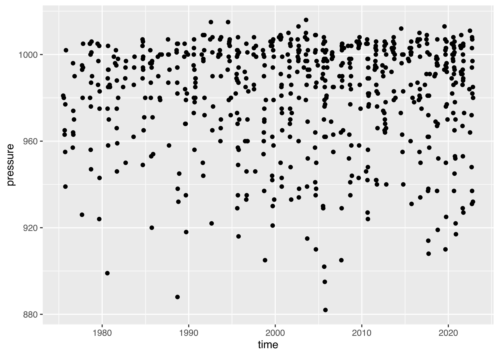

library(dplyr)
data(starwars)
starwars
## # A tibble: 87 × 14
## name height mass hair_…¹ skin_…² eye_c…³ birth…⁴ sex gender homew…⁵
## <chr> <int> <dbl> <chr> <chr> <chr> <dbl> <chr> <chr> <chr>
## 1 Luke Skywa… 172 77 blond fair blue 19 male mascu… Tatooi…
## 2 C-3PO 167 75 <NA> gold yellow 112 none mascu… Tatooi…
## 3 R2-D2 96 32 <NA> white,… red 33 none mascu… Naboo
## 4 Darth Vader 202 136 none white yellow 41.9 male mascu… Tatooi…
## 5 Leia Organa 150 49 brown light brown 19 fema… femin… Aldera…
## 6 Owen Lars 178 120 brown,… light blue 52 male mascu… Tatooi…
## 7 Beru White… 165 75 brown light blue 47 fema… femin… Tatooi…
## 8 R5-D4 97 32 <NA> white,… red NA none mascu… Tatooi…
## 9 Biggs Dark… 183 84 black light brown 24 male mascu… Tatooi…
## 10 Obi-Wan Ke… 182 77 auburn… fair blue-g… 57 male mascu… Stewjon
## # … with 77 more rows, 4 more variables: species <chr>, films <list>,
## # vehicles <list>, starships <list>, and abbreviated variable names
## # ¹hair_color, ²skin_color, ³eye_color, ⁴birth_year, ⁵homeworld17 Data Cleaning
## Objectives
- Identify required sequence of steps for data cleaning
- Describe step-by-step data cleaning process in lay terms appropriately
- Apply data manipulation verbs to prepare data for analysis
- Understand the consequences of data cleaning steps for statistical analysis
- Create summaries of data appropriate for analysis or display using data manipulation techniques
17.1 Introduction
In this section, we’re going start learning how to work with data. Generally speaking, data doesn’t come in a form suitable for analysis1 - you have to clean it up, create the variables you care about, get rid of those you don’t care about, and so on.
Some people call the process of cleaning and organizing your data “data wrangling”, which is a fantastic way to think about chasing down all of the issues in the data.

In R, we’ll be using the tidyverse for this. It’s a meta-package (a package that just loads other packages) that collects packages designed with the same philosophy2 and interface (basically, the commands will use predictable argument names and structure). You’ve already been introduced to parts of the tidyverse - specifically, readr and ggplot2.
dplyr (one of the packages in the tidyverse) creates a “grammar of data manipulation” to make it easier to describe different operations. I find the dplyr grammar to be extremely useful when talking about data operations, so I’m going to attempt to show you how to do the same operations in R with dplyr, and in Python (without the underlying framework).
Each dplyr verb describes a common task when doing both exploratory data analysis and more formal statistical modeling. In all tidyverse functions, data comes first – literally, as it’s the first argument to any function. In addition, you don’t use df$variable to access a variable - you refer to the variable by its name alone (“bare” names). This makes the syntax much cleaner and easier to read, which is another principle of the tidy philosophy.
In Python, most data manipulation tasks are handled using pandas[1]. In the interests of using a single consistent “language” for describing data manipulation tasks, I’ll use the tidyverse “verbs” to describe operations in both languages. The goal of this is to help focus your attention on the essentials of the operations, instead of the specific syntax.
There is also the datar python package[2], which attempts to port the dplyr grammar of data wrangling into python. While pandas tends to be fairly similar to base R in basic operation, datar may be more useful if you prefer the dplyr way of handling things using a data-first API.
I haven’t had the chance to add the datar package to this book, but it looks promising and may be worth your time to figure out. It’s a bit too new for me to take the time to add it into this book - I want packages that will be maintained long-term if I’m going to teach them to others.
Note
There is an excellent dplyr cheatsheet available from RStudio. You may want to print it out to have a copy to reference as you work through this chapter.
Here is a data wrangling with pandas cheatsheet that is formatted similarly to the dplyr cheat sheet.
17.2 Tidy Data
There are infinitely many ways to configure “messy” data, but data that is “tidy” has 3 attributes:
- Each variable has its own column
- Each observation has its own row
- Each value has its own cell
These attributes aren’t sufficient to define “clean” data, but they work to define “tidy” data (in the same way that you can have a “tidy” room because all of your clothes are folded, but they aren’t clean just because they’re folded; you could have folded a pile of dirty clothes).
We’ll get more into how to work with different “messy” data configurations in Chapter 19 and Chapter 20, but it’s worth keeping rules 1 and 3 in mind while working through this module.
17.3 Filter: Subset rows
Filter allows us to work with a subset of a larger data frame, keeping only the rows we’re interested in. We provide one or more logical conditions, and only those rows which meet the logical conditions are returned from filter(). Note that unless we store the result from filter() in the original object, we don’t change the original.

Example: starwars
Let’s explore how it works, using the starwars dataset, which contains a comprehensive list of the characters in the Star Wars movies.
In the interests of demonstrating the process on the same data, I’ve exported the starwars data to a CSV file using the readr package. I had to remove the list-columns (films, vehicles, starships) because that format isn’t supported by CSV files. You can access the csv data here.
This data set is included in the dplyr package, so we load that package and then use the data() function to load dataset into memory. The loading isn’t complete until we actually use the dataset though… so let’s print the first few rows.
We have to use the exported CSV data in python.
import pandas as pd
starwars = pd.read_csv("https://github.com/srvanderplas/datasets/raw/main/clean/starwars.csv")
starwars
## name height mass ... gender homeworld species
## 0 Luke Skywalker 172.0 77.0 ... masculine Tatooine Human
## 1 C-3PO 167.0 75.0 ... masculine Tatooine Droid
## 2 R2-D2 96.0 32.0 ... masculine Naboo Droid
## 3 Darth Vader 202.0 136.0 ... masculine Tatooine Human
## 4 Leia Organa 150.0 49.0 ... feminine Alderaan Human
## .. ... ... ... ... ... ... ...
## 82 Rey NaN NaN ... feminine NaN Human
## 83 Poe Dameron NaN NaN ... masculine NaN Human
## 84 BB8 NaN NaN ... masculine NaN Droid
## 85 Captain Phasma NaN NaN ... NaN NaN NaN
## 86 Padmé Amidala 165.0 45.0 ... feminine Naboo Human
##
## [87 rows x 11 columns]
from skimpy import skim
## Error in py_call_impl(callable, dots$args, dots$keywords): ModuleNotFoundError: No module named 'skimpy'
skim(starwars)
## Error in py_call_impl(callable, dots$args, dots$keywords): NameError: name 'skim' is not definedOnce the data is set up, filtering the data (selecting certain rows) is actually very simple. Of course, we’ve talked about how to use logical indexing before in Section 9.4.1, but here we’ll focus on using specific functions to perform the same operation.
The dplyr verb for selecting rows is filter. filter takes a set of one or more logical conditions, using bare column names and logical operators. Each provided condition is combined using AND.
# Get only the people
filter(starwars, species == "Human")
## # A tibble: 35 × 14
## name height mass hair_…¹ skin_…² eye_c…³ birth…⁴ sex gender homew…⁵
## <chr> <int> <dbl> <chr> <chr> <chr> <dbl> <chr> <chr> <chr>
## 1 Luke Skywa… 172 77 blond fair blue 19 male mascu… Tatooi…
## 2 Darth Vader 202 136 none white yellow 41.9 male mascu… Tatooi…
## 3 Leia Organa 150 49 brown light brown 19 fema… femin… Aldera…
## 4 Owen Lars 178 120 brown,… light blue 52 male mascu… Tatooi…
## 5 Beru White… 165 75 brown light blue 47 fema… femin… Tatooi…
## 6 Biggs Dark… 183 84 black light brown 24 male mascu… Tatooi…
## 7 Obi-Wan Ke… 182 77 auburn… fair blue-g… 57 male mascu… Stewjon
## 8 Anakin Sky… 188 84 blond fair blue 41.9 male mascu… Tatooi…
## 9 Wilhuff Ta… 180 NA auburn… fair blue 64 male mascu… Eriadu
## 10 Han Solo 180 80 brown fair brown 29 male mascu… Corell…
## # … with 25 more rows, 4 more variables: species <chr>, films <list>,
## # vehicles <list>, starships <list>, and abbreviated variable names
## # ¹hair_color, ²skin_color, ³eye_color, ⁴birth_year, ⁵homeworld
# Get only the people who come from Tatooine
filter(starwars, species == "Human", homeworld == "Tatooine")
## # A tibble: 8 × 14
## name height mass hair_…¹ skin_…² eye_c…³ birth…⁴ sex gender homew…⁵
## <chr> <int> <dbl> <chr> <chr> <chr> <dbl> <chr> <chr> <chr>
## 1 Luke Skywal… 172 77 blond fair blue 19 male mascu… Tatooi…
## 2 Darth Vader 202 136 none white yellow 41.9 male mascu… Tatooi…
## 3 Owen Lars 178 120 brown,… light blue 52 male mascu… Tatooi…
## 4 Beru Whites… 165 75 brown light blue 47 fema… femin… Tatooi…
## 5 Biggs Darkl… 183 84 black light brown 24 male mascu… Tatooi…
## 6 Anakin Skyw… 188 84 blond fair blue 41.9 male mascu… Tatooi…
## 7 Shmi Skywal… 163 NA black fair brown 72 fema… femin… Tatooi…
## 8 Cliegg Lars 183 NA brown fair blue 82 male mascu… Tatooi…
## # … with 4 more variables: species <chr>, films <list>, vehicles <list>,
## # starships <list>, and abbreviated variable names ¹hair_color, ²skin_color,
## # ³eye_color, ⁴birth_year, ⁵homeworld# Get only the people
starwars.query("species == 'Human'")
# Get only the people who come from Tattoine
## name height mass ... gender homeworld species
## 0 Luke Skywalker 172.0 77.0 ... masculine Tatooine Human
## 3 Darth Vader 202.0 136.0 ... masculine Tatooine Human
## 4 Leia Organa 150.0 49.0 ... feminine Alderaan Human
## 5 Owen Lars 178.0 120.0 ... masculine Tatooine Human
## 6 Beru Whitesun lars 165.0 75.0 ... feminine Tatooine Human
## 8 Biggs Darklighter 183.0 84.0 ... masculine Tatooine Human
## 9 Obi-Wan Kenobi 182.0 77.0 ... masculine Stewjon Human
## 10 Anakin Skywalker 188.0 84.0 ... masculine Tatooine Human
## 11 Wilhuff Tarkin 180.0 NaN ... masculine Eriadu Human
## 13 Han Solo 180.0 80.0 ... masculine Corellia Human
## 16 Wedge Antilles 170.0 77.0 ... masculine Corellia Human
## 17 Jek Tono Porkins 180.0 110.0 ... masculine Bestine IV Human
## 19 Palpatine 170.0 75.0 ... masculine Naboo Human
## 20 Boba Fett 183.0 78.2 ... masculine Kamino Human
## 23 Lando Calrissian 177.0 79.0 ... masculine Socorro Human
## 24 Lobot 175.0 79.0 ... masculine Bespin Human
## 26 Mon Mothma 150.0 NaN ... feminine Chandrila Human
## 27 Arvel Crynyd NaN NaN ... masculine NaN Human
## 30 Qui-Gon Jinn 193.0 89.0 ... masculine NaN Human
## 32 Finis Valorum 170.0 NaN ... masculine Coruscant Human
## 40 Shmi Skywalker 163.0 NaN ... feminine Tatooine Human
## 47 Mace Windu 188.0 84.0 ... masculine Haruun Kal Human
## 56 Gregar Typho 185.0 85.0 ... masculine Naboo Human
## 57 Cordé 157.0 NaN ... feminine Naboo Human
## 58 Cliegg Lars 183.0 NaN ... masculine Tatooine Human
## 62 Dormé 165.0 NaN ... feminine Naboo Human
## 63 Dooku 193.0 80.0 ... masculine Serenno Human
## 64 Bail Prestor Organa 191.0 NaN ... masculine Alderaan Human
## 65 Jango Fett 183.0 79.0 ... masculine Concord Dawn Human
## 70 Jocasta Nu 167.0 NaN ... feminine Coruscant Human
## 78 Raymus Antilles 188.0 79.0 ... masculine Alderaan Human
## 81 Finn NaN NaN ... masculine NaN Human
## 82 Rey NaN NaN ... feminine NaN Human
## 83 Poe Dameron NaN NaN ... masculine NaN Human
## 86 Padmé Amidala 165.0 45.0 ... feminine Naboo Human
##
## [35 rows x 11 columns]
starwars.query("species == 'Human' & homeworld == 'Tatooine'")
# This is another option if you prefer to keep the queries separate
# starwars.query("species == 'Human'").query("homeworld == 'Tatooine'")
## name height mass ... gender homeworld species
## 0 Luke Skywalker 172.0 77.0 ... masculine Tatooine Human
## 3 Darth Vader 202.0 136.0 ... masculine Tatooine Human
## 5 Owen Lars 178.0 120.0 ... masculine Tatooine Human
## 6 Beru Whitesun lars 165.0 75.0 ... feminine Tatooine Human
## 8 Biggs Darklighter 183.0 84.0 ... masculine Tatooine Human
## 10 Anakin Skywalker 188.0 84.0 ... masculine Tatooine Human
## 40 Shmi Skywalker 163.0 NaN ... feminine Tatooine Human
## 58 Cliegg Lars 183.0 NaN ... masculine Tatooine Human
##
## [8 rows x 11 columns]In base R, you would perform a filtering operation using subset
# Get only the people
subset(starwars, species == "Human")
## # A tibble: 35 × 14
## name height mass hair_…¹ skin_…² eye_c…³ birth…⁴ sex gender homew…⁵
## <chr> <int> <dbl> <chr> <chr> <chr> <dbl> <chr> <chr> <chr>
## 1 Luke Skywa… 172 77 blond fair blue 19 male mascu… Tatooi…
## 2 Darth Vader 202 136 none white yellow 41.9 male mascu… Tatooi…
## 3 Leia Organa 150 49 brown light brown 19 fema… femin… Aldera…
## 4 Owen Lars 178 120 brown,… light blue 52 male mascu… Tatooi…
## 5 Beru White… 165 75 brown light blue 47 fema… femin… Tatooi…
## 6 Biggs Dark… 183 84 black light brown 24 male mascu… Tatooi…
## 7 Obi-Wan Ke… 182 77 auburn… fair blue-g… 57 male mascu… Stewjon
## 8 Anakin Sky… 188 84 blond fair blue 41.9 male mascu… Tatooi…
## 9 Wilhuff Ta… 180 NA auburn… fair blue 64 male mascu… Eriadu
## 10 Han Solo 180 80 brown fair brown 29 male mascu… Corell…
## # … with 25 more rows, 4 more variables: species <chr>, films <list>,
## # vehicles <list>, starships <list>, and abbreviated variable names
## # ¹hair_color, ²skin_color, ³eye_color, ⁴birth_year, ⁵homeworld
# Get only the people who come from Tatooine
subset(starwars, species == "Human" & homeworld == "Tatooine")
## # A tibble: 8 × 14
## name height mass hair_…¹ skin_…² eye_c…³ birth…⁴ sex gender homew…⁵
## <chr> <int> <dbl> <chr> <chr> <chr> <dbl> <chr> <chr> <chr>
## 1 Luke Skywal… 172 77 blond fair blue 19 male mascu… Tatooi…
## 2 Darth Vader 202 136 none white yellow 41.9 male mascu… Tatooi…
## 3 Owen Lars 178 120 brown,… light blue 52 male mascu… Tatooi…
## 4 Beru Whites… 165 75 brown light blue 47 fema… femin… Tatooi…
## 5 Biggs Darkl… 183 84 black light brown 24 male mascu… Tatooi…
## 6 Anakin Skyw… 188 84 blond fair blue 41.9 male mascu… Tatooi…
## 7 Shmi Skywal… 163 NA black fair brown 72 fema… femin… Tatooi…
## 8 Cliegg Lars 183 NA brown fair blue 82 male mascu… Tatooi…
## # … with 4 more variables: species <chr>, films <list>, vehicles <list>,
## # starships <list>, and abbreviated variable names ¹hair_color, ²skin_color,
## # ³eye_color, ⁴birth_year, ⁵homeworldNotice that with subset, you have to use & to join two logical statements; it does not by default take multiple successive arguments.
17.3.1 Common Row Selection Tasks
In dplyr, there are a few helper functions which may be useful when constructing filter statements. In base R or python, these tasks are still important, and so I’ll do my best to show you easy ways to handle each task in each language.
Try it out: Filtering
Using the Pokemon data, can you create a new data frame that has only water type Pokemon? Can you write a filter statement that looks for any Pokemon which has water type for either type1 or type2?
poke <- read_csv("https://github.com/srvanderplas/datasets/raw/main/clean/pokemon_gen_1-9.csv")
## Error in read_csv("https://github.com/srvanderplas/datasets/raw/main/clean/pokemon_gen_1-9.csv"): could not find function "read_csv"
filter(poke, type_1 == "Water")
## Error in filter(poke, type_1 == "Water"): object 'poke' not found
filter(poke, type_1 == "Water" | type_2 == "Water")
## Error in filter(poke, type_1 == "Water" | type_2 == "Water"): object 'poke' not found
# The conditions have to be separated by |, which means "or"import pandas as pd
poke = pd.read_csv("https://github.com/srvanderplas/datasets/raw/main/clean/pokemon_gen_1-9.csv")
poke.query("type_1=='Water'")
## gen pokedex_no ... type_1 type_2
## 9 1 7 ... Water NaN
## 10 1 8 ... Water NaN
## 11 1 9 ... Water NaN
## 12 1 9 ... Water NaN
## 98 1 54 ... Water NaN
## ... ... ... ... ... ...
## 1467 9 964 ... Water NaN
## 1468 9 964 ... Water NaN
## 1469 9 964 ... Water NaN
## 1481 9 976 ... Water Psychic
## 1482 9 977 ... Water NaN
##
## [179 rows x 15 columns]
poke.query("type_1=='Water'|type_2=='Water'")
# The conditions have to be separated by |, which means "or"
## gen pokedex_no ... type_1 type_2
## 9 1 7 ... Water NaN
## 10 1 8 ... Water NaN
## 11 1 9 ... Water NaN
## 12 1 9 ... Water NaN
## 98 1 54 ... Water NaN
## ... ... ... ... ... ...
## 1488 9 978 ... Dragon Water
## 1489 9 978 ... Dragon Water
## 1490 9 978 ... Dragon Water
## 1491 9 978 ... Dragon Water
## 1505 9 991 ... Ice Water
##
## [221 rows x 15 columns]poke <- read_csv("https://github.com/srvanderplas/datasets/raw/main/clean/pokemon_gen_1-9.csv")
## Error in read_csv("https://github.com/srvanderplas/datasets/raw/main/clean/pokemon_gen_1-9.csv"): could not find function "read_csv"
subset(poke, type_1 == "Water")
## Error in subset(poke, type_1 == "Water"): object 'poke' not found
subset(poke, type_1 == "Water" | type_2 == "Water")
## Error in subset(poke, type_1 == "Water" | type_2 == "Water"): object 'poke' not found
# The conditions have to be separated by |, which means "or"17.4 Select: Pick columns
Sometimes, we don’t want to work with a set of 50 variables when we’re only interested in 5. When that happens, we might be able to pick the variables we want by index (e.g. df[, c(1, 3, 5)]), but this can get tedious.
In dplyr, the function to pick a few columns is select(). The syntax from the help file (?select) looks deceptively simple.
select(.data, …)
So as with just about every other tidyverse function, the first argument in a select statement is the data. After that, though, you can put just about anything that R can interpret. ... means something along the lines of “put in any additional arguments that make sense in context or might be passed on to other functions”.
So what can go in there?
Ways to select variables in
dplyr
First, dplyr aims to work with standard R syntax, making it intuitive (and also, making it work with variable names instead of just variable indices).3
Most dplyr commands work with “bare” variable names - you don’t need to put the variable name in quotes to reference it. There are a few exceptions to this rule, but they’re very explicitly exceptions.
var3:var5:select(df, var3:var5)will give you a data frame with columns var3, anything between var3 and var 5, and var5-
!(<set of variables>)will give you any columns that aren’t in the set of variables in parentheses-
(<set of vars 1>) & (<set of vars 2>)will give you any variables that are in both set 1 and set 2.(<set of vars 1>) | (<set of vars 2>)will give you any variables that are in either set 1 or set 2. -
c()combines sets of variables.
-
dplyr also defines a lot of variable selection “helpers” that can be used inside select() statements. These statements work with bare column names (so you don’t have to put quotes around the column names when you use them).
-
everything()matches all variables -
last_col()matches the last variable.last_col(offset = n)selects the n-th to last variable. -
starts_with("xyz")will match any columns with names that start with xyz. Similarly,ends_with()does exactly what you’d expect as well. -
contains("xyz")will match any columns with names containing the literal string “xyz”. Note,containsdoes not work with regular expressions (you don’t need to know what that means right now). -
matches(regex)takes a regular expression as an argument and returns all columns matching that expression. -
num_range(prefix, range)selects any columns that start with prefix and have numbers matching the provided numerical range.
There are also selectors that deal with character vectors. These can be useful if you have a list of important variables and want to just keep those variables.
-
all_of(char)matches all variable names in the character vectorchar. If one of the variables doesn’t exist, this will return an error. -
any_of(char)matches the contents of the character vectorchar, but does not throw an error if the variable doesn’t exist in the data set.
There’s one final selector -
-
where()applies a function to each variable and selects those for which the function returns TRUE. This provides a lot of flexibility and opportunity to be creative.
Let’s try these selector functions out and see what we can accomplish!
library(nycflights13)
data(flights)
str(flights)
## tibble [336,776 × 19] (S3: tbl_df/tbl/data.frame)
## $ year : int [1:336776] 2013 2013 2013 2013 2013 2013 2013 2013 2013 2013 ...
## $ month : int [1:336776] 1 1 1 1 1 1 1 1 1 1 ...
## $ day : int [1:336776] 1 1 1 1 1 1 1 1 1 1 ...
## $ dep_time : int [1:336776] 517 533 542 544 554 554 555 557 557 558 ...
## $ sched_dep_time: int [1:336776] 515 529 540 545 600 558 600 600 600 600 ...
## $ dep_delay : num [1:336776] 2 4 2 -1 -6 -4 -5 -3 -3 -2 ...
## $ arr_time : int [1:336776] 830 850 923 1004 812 740 913 709 838 753 ...
## $ sched_arr_time: int [1:336776] 819 830 850 1022 837 728 854 723 846 745 ...
## $ arr_delay : num [1:336776] 11 20 33 -18 -25 12 19 -14 -8 8 ...
## $ carrier : chr [1:336776] "UA" "UA" "AA" "B6" ...
## $ flight : int [1:336776] 1545 1714 1141 725 461 1696 507 5708 79 301 ...
## $ tailnum : chr [1:336776] "N14228" "N24211" "N619AA" "N804JB" ...
## $ origin : chr [1:336776] "EWR" "LGA" "JFK" "JFK" ...
## $ dest : chr [1:336776] "IAH" "IAH" "MIA" "BQN" ...
## $ air_time : num [1:336776] 227 227 160 183 116 150 158 53 140 138 ...
## $ distance : num [1:336776] 1400 1416 1089 1576 762 ...
## $ hour : num [1:336776] 5 5 5 5 6 5 6 6 6 6 ...
## $ minute : num [1:336776] 15 29 40 45 0 58 0 0 0 0 ...
## $ time_hour : POSIXct[1:336776], format: "2013-01-01 05:00:00" "2013-01-01 05:00:00" ...We’ll start out with the nycflights13 package, which contains information on all flights that left a NYC airport to destinations in the US, Puerto Rico, and the US Virgin Islands.
Tip
You might want to try out your EDA (Exploratory Data Analysis) skills to see what you can find out about the dataset, before seeing how select() works.
We could get a data frame of departure information for each flight:
select(flights, flight, year:day, tailnum, origin, matches("dep"))
## # A tibble: 336,776 × 9
## flight year month day tailnum origin dep_time sched_dep_time dep_delay
## <int> <int> <int> <int> <chr> <chr> <int> <int> <dbl>
## 1 1545 2013 1 1 N14228 EWR 517 515 2
## 2 1714 2013 1 1 N24211 LGA 533 529 4
## 3 1141 2013 1 1 N619AA JFK 542 540 2
## 4 725 2013 1 1 N804JB JFK 544 545 -1
## 5 461 2013 1 1 N668DN LGA 554 600 -6
## 6 1696 2013 1 1 N39463 EWR 554 558 -4
## 7 507 2013 1 1 N516JB EWR 555 600 -5
## 8 5708 2013 1 1 N829AS LGA 557 600 -3
## 9 79 2013 1 1 N593JB JFK 557 600 -3
## 10 301 2013 1 1 N3ALAA LGA 558 600 -2
## # … with 336,766 more rowsPerhaps we want the plane and flight ID information to be the first columns:
flights %>%
select(carrier:dest, everything())
## # A tibble: 336,776 × 19
## carrier flight tailnum origin dest year month day dep_t…¹ sched…² dep_d…³
## <chr> <int> <chr> <chr> <chr> <int> <int> <int> <int> <int> <dbl>
## 1 UA 1545 N14228 EWR IAH 2013 1 1 517 515 2
## 2 UA 1714 N24211 LGA IAH 2013 1 1 533 529 4
## 3 AA 1141 N619AA JFK MIA 2013 1 1 542 540 2
## 4 B6 725 N804JB JFK BQN 2013 1 1 544 545 -1
## 5 DL 461 N668DN LGA ATL 2013 1 1 554 600 -6
## 6 UA 1696 N39463 EWR ORD 2013 1 1 554 558 -4
## 7 B6 507 N516JB EWR FLL 2013 1 1 555 600 -5
## 8 EV 5708 N829AS LGA IAD 2013 1 1 557 600 -3
## 9 B6 79 N593JB JFK MCO 2013 1 1 557 600 -3
## 10 AA 301 N3ALAA LGA ORD 2013 1 1 558 600 -2
## # … with 336,766 more rows, 8 more variables: arr_time <int>,
## # sched_arr_time <int>, arr_delay <dbl>, air_time <dbl>, distance <dbl>,
## # hour <dbl>, minute <dbl>, time_hour <dttm>, and abbreviated variable names
## # ¹dep_time, ²sched_dep_time, ³dep_delayNote that everything() won’t duplicate columns you’ve already added.
Exploring the difference between bare name selection and all_of()/any_of()
flights %>%
select(carrier, flight, tailnum, matches("time"))
## # A tibble: 336,776 × 9
## carrier flight tailnum dep_time sched_dep_time arr_time sched_arr_t…¹ air_t…²
## <chr> <int> <chr> <int> <int> <int> <int> <dbl>
## 1 UA 1545 N14228 517 515 830 819 227
## 2 UA 1714 N24211 533 529 850 830 227
## 3 AA 1141 N619AA 542 540 923 850 160
## 4 B6 725 N804JB 544 545 1004 1022 183
## 5 DL 461 N668DN 554 600 812 837 116
## 6 UA 1696 N39463 554 558 740 728 150
## 7 B6 507 N516JB 555 600 913 854 158
## 8 EV 5708 N829AS 557 600 709 723 53
## 9 B6 79 N593JB 557 600 838 846 140
## 10 AA 301 N3ALAA 558 600 753 745 138
## # … with 336,766 more rows, 1 more variable: time_hour <dttm>, and abbreviated
## # variable names ¹sched_arr_time, ²air_time
varlist <- c("carrier", "flight", "tailnum",
"dep_time", "sched_dep_time", "arr_time", "sched_arr_time",
"air_time")
flights %>%
select(all_of(varlist))
## # A tibble: 336,776 × 8
## carrier flight tailnum dep_time sched_dep_time arr_time sched_arr_t…¹ air_t…²
## <chr> <int> <chr> <int> <int> <int> <int> <dbl>
## 1 UA 1545 N14228 517 515 830 819 227
## 2 UA 1714 N24211 533 529 850 830 227
## 3 AA 1141 N619AA 542 540 923 850 160
## 4 B6 725 N804JB 544 545 1004 1022 183
## 5 DL 461 N668DN 554 600 812 837 116
## 6 UA 1696 N39463 554 558 740 728 150
## 7 B6 507 N516JB 555 600 913 854 158
## 8 EV 5708 N829AS 557 600 709 723 53
## 9 B6 79 N593JB 557 600 838 846 140
## 10 AA 301 N3ALAA 558 600 753 745 138
## # … with 336,766 more rows, and abbreviated variable names ¹sched_arr_time,
## # ²air_time
varlist <- c(varlist, "whoops")
flights %>%
select(all_of(varlist)) # this errors out b/c whoops doesn't exist
## Error in `select()`:
## ! Problem while evaluating `all_of(varlist)`.
flights %>%
select(any_of(varlist)) # this runs just fine
## # A tibble: 336,776 × 8
## carrier flight tailnum dep_time sched_dep_time arr_time sched_arr_t…¹ air_t…²
## <chr> <int> <chr> <int> <int> <int> <int> <dbl>
## 1 UA 1545 N14228 517 515 830 819 227
## 2 UA 1714 N24211 533 529 850 830 227
## 3 AA 1141 N619AA 542 540 923 850 160
## 4 B6 725 N804JB 544 545 1004 1022 183
## 5 DL 461 N668DN 554 600 812 837 116
## 6 UA 1696 N39463 554 558 740 728 150
## 7 B6 507 N516JB 555 600 913 854 158
## 8 EV 5708 N829AS 557 600 709 723 53
## 9 B6 79 N593JB 557 600 838 846 140
## 10 AA 301 N3ALAA 558 600 753 745 138
## # … with 336,766 more rows, and abbreviated variable names ¹sched_arr_time,
## # ²air_timeSo for now, at least in R, you know how to cut your data down to size rowwise (with filter) and column-wise (with select).
First, let’s install the nycflights13 package[3] in python with pip install nycflights13.
from nycflights13 import flightsSelect operations are not as easy in python as they are using select() with helpers.
cols = flights.columns
# Rearrange column order by manual indexing
x = cols[9:13].append(cols[0:9])
x = x.append(cols[13:19])
# Then use the index to rearrange the columns
flights.loc[:,x]
## carrier flight tailnum ... hour minute time_hour
## 0 UA 1545 N14228 ... 5 15 2013-01-01T10:00:00Z
## 1 UA 1714 N24211 ... 5 29 2013-01-01T10:00:00Z
## 2 AA 1141 N619AA ... 5 40 2013-01-01T10:00:00Z
## 3 B6 725 N804JB ... 5 45 2013-01-01T10:00:00Z
## 4 DL 461 N668DN ... 6 0 2013-01-01T11:00:00Z
## ... ... ... ... ... ... ... ...
## 336771 9E 3393 NaN ... 14 55 2013-09-30T18:00:00Z
## 336772 9E 3525 NaN ... 22 0 2013-10-01T02:00:00Z
## 336773 MQ 3461 N535MQ ... 12 10 2013-09-30T16:00:00Z
## 336774 MQ 3572 N511MQ ... 11 59 2013-09-30T15:00:00Z
## 336775 MQ 3531 N839MQ ... 8 40 2013-09-30T12:00:00Z
##
## [336776 rows x 19 columns]17.4.0.1 List Comprehensions
In Python, there are certain shorthands called “list comprehensions” [4] that can perform similar functions to e.g. the matches() function in dplyr.
Suppose we want to get all columns containing the word ‘time’. We could iterate through the list of columns (flights.columns) and add the column name any time we detect the word ‘time’ within. That is essentially what the following code does:
# This gets all columns that contain time
timecols = [col for col in flights.columns if 'time' in col]
timecols
## ['dep_time', 'sched_dep_time', 'arr_time', 'sched_arr_time', 'air_time', 'time_hour']Explaining the code: - for col in flights.columns iterates through the list of columns, storing each column name in the variable col - if 'time' in col detects the presence of the word ‘time’ in the column name stored in col - the col out front adds the column name in the variable col to the array of columns to keep
17.4.0.2 Selecting columns in Python
# This gets all columns that contain time
timecols = [col for col in flights.columns if 'time' in col]
# Other columns
selcols = ["carrier", "flight", "tailnum"]
# Combine the two lists
selcols.extend(timecols)
# Subset the data frame
flights.loc[:,selcols]
## carrier flight tailnum ... sched_arr_time air_time time_hour
## 0 UA 1545 N14228 ... 819 227.0 2013-01-01T10:00:00Z
## 1 UA 1714 N24211 ... 830 227.0 2013-01-01T10:00:00Z
## 2 AA 1141 N619AA ... 850 160.0 2013-01-01T10:00:00Z
## 3 B6 725 N804JB ... 1022 183.0 2013-01-01T10:00:00Z
## 4 DL 461 N668DN ... 837 116.0 2013-01-01T11:00:00Z
## ... ... ... ... ... ... ... ...
## 336771 9E 3393 NaN ... 1634 NaN 2013-09-30T18:00:00Z
## 336772 9E 3525 NaN ... 2312 NaN 2013-10-01T02:00:00Z
## 336773 MQ 3461 N535MQ ... 1330 NaN 2013-09-30T16:00:00Z
## 336774 MQ 3572 N511MQ ... 1344 NaN 2013-09-30T15:00:00Z
## 336775 MQ 3531 N839MQ ... 1020 NaN 2013-09-30T12:00:00Z
##
## [336776 rows x 9 columns]
selcols.extend(["whoops"])
selcols
# Subset the data frame
## ['carrier', 'flight', 'tailnum', 'dep_time', 'sched_dep_time', 'arr_time', 'sched_arr_time', 'air_time', 'time_hour', 'whoops']
flights.loc[:,selcols]
# Error-tolerance - use list comprehension to check if
# variable names are in the data frame
## Error in py_call_impl(callable, dots$args, dots$keywords): KeyError: "['whoops'] not in index"
selcols_fixed = [x for x in selcols if x in flights.columns]
flights.loc[:,selcols_fixed]
## carrier flight tailnum ... sched_arr_time air_time time_hour
## 0 UA 1545 N14228 ... 819 227.0 2013-01-01T10:00:00Z
## 1 UA 1714 N24211 ... 830 227.0 2013-01-01T10:00:00Z
## 2 AA 1141 N619AA ... 850 160.0 2013-01-01T10:00:00Z
## 3 B6 725 N804JB ... 1022 183.0 2013-01-01T10:00:00Z
## 4 DL 461 N668DN ... 837 116.0 2013-01-01T11:00:00Z
## ... ... ... ... ... ... ... ...
## 336771 9E 3393 NaN ... 1634 NaN 2013-09-30T18:00:00Z
## 336772 9E 3525 NaN ... 2312 NaN 2013-10-01T02:00:00Z
## 336773 MQ 3461 N535MQ ... 1330 NaN 2013-09-30T16:00:00Z
## 336774 MQ 3572 N511MQ ... 1344 NaN 2013-09-30T15:00:00Z
## 336775 MQ 3531 N839MQ ... 1020 NaN 2013-09-30T12:00:00Z
##
## [336776 rows x 9 columns]In base R, we typically select columns by name or index directly. This is nowhere near as convenient, of course, but there are little shorthand ways to replicate the functionality of e.g. matches in dplyr.
grepl is a shorthand function for grep, which searches for a pattern in a vector of strings. grepl returns a logical vector indicating whether the pattern ("dep", in this case) was found in the vector (names(flights), in this case).
depcols <- names(flights)[grepl("dep", names(flights))]
collist <- c("flight", "year", "month", "day", "tailnum", "origin", depcols)
flights[,collist]
## # A tibble: 336,776 × 9
## flight year month day tailnum origin dep_time sched_dep_time dep_delay
## <int> <int> <int> <int> <chr> <chr> <int> <int> <dbl>
## 1 1545 2013 1 1 N14228 EWR 517 515 2
## 2 1714 2013 1 1 N24211 LGA 533 529 4
## 3 1141 2013 1 1 N619AA JFK 542 540 2
## 4 725 2013 1 1 N804JB JFK 544 545 -1
## 5 461 2013 1 1 N668DN LGA 554 600 -6
## 6 1696 2013 1 1 N39463 EWR 554 558 -4
## 7 507 2013 1 1 N516JB EWR 555 600 -5
## 8 5708 2013 1 1 N829AS LGA 557 600 -3
## 9 79 2013 1 1 N593JB JFK 557 600 -3
## 10 301 2013 1 1 N3ALAA LGA 558 600 -2
## # … with 336,766 more rowsPerhaps we want the plane and flight ID information to be the first columns:
new_order <- names(flights)
new_order <- new_order[c(10:14, 1:9, 15:19)]
flights[,new_order]
## # A tibble: 336,776 × 19
## carrier flight tailnum origin dest year month day dep_t…¹ sched…² dep_d…³
## <chr> <int> <chr> <chr> <chr> <int> <int> <int> <int> <int> <dbl>
## 1 UA 1545 N14228 EWR IAH 2013 1 1 517 515 2
## 2 UA 1714 N24211 LGA IAH 2013 1 1 533 529 4
## 3 AA 1141 N619AA JFK MIA 2013 1 1 542 540 2
## 4 B6 725 N804JB JFK BQN 2013 1 1 544 545 -1
## 5 DL 461 N668DN LGA ATL 2013 1 1 554 600 -6
## 6 UA 1696 N39463 EWR ORD 2013 1 1 554 558 -4
## 7 B6 507 N516JB EWR FLL 2013 1 1 555 600 -5
## 8 EV 5708 N829AS LGA IAD 2013 1 1 557 600 -3
## 9 B6 79 N593JB JFK MCO 2013 1 1 557 600 -3
## 10 AA 301 N3ALAA LGA ORD 2013 1 1 558 600 -2
## # … with 336,766 more rows, 8 more variables: arr_time <int>,
## # sched_arr_time <int>, arr_delay <dbl>, air_time <dbl>, distance <dbl>,
## # hour <dbl>, minute <dbl>, time_hour <dttm>, and abbreviated variable names
## # ¹dep_time, ²sched_dep_time, ³dep_delayThis is less convenient than dplyr::everything in part because it depends on us to get the column indexes right.
dplyr::relocate
Another handy dplyr function is relocate; while you definitely can do this operation in many, many different ways, it may be simpler to do it using relocate. But, I’m covering relocate here mostly because it also comes with this amazing cartoon illustration.

# Move flight specific info to the front
data(flights, package = "nycflights13")
relocate(flights, carrier:dest, everything())
## # A tibble: 336,776 × 19
## carrier flight tailnum origin dest year month day dep_t…¹ sched…² dep_d…³
## <chr> <int> <chr> <chr> <chr> <int> <int> <int> <int> <int> <dbl>
## 1 UA 1545 N14228 EWR IAH 2013 1 1 517 515 2
## 2 UA 1714 N24211 LGA IAH 2013 1 1 533 529 4
## 3 AA 1141 N619AA JFK MIA 2013 1 1 542 540 2
## 4 B6 725 N804JB JFK BQN 2013 1 1 544 545 -1
## 5 DL 461 N668DN LGA ATL 2013 1 1 554 600 -6
## 6 UA 1696 N39463 EWR ORD 2013 1 1 554 558 -4
## 7 B6 507 N516JB EWR FLL 2013 1 1 555 600 -5
## 8 EV 5708 N829AS LGA IAD 2013 1 1 557 600 -3
## 9 B6 79 N593JB JFK MCO 2013 1 1 557 600 -3
## 10 AA 301 N3ALAA LGA ORD 2013 1 1 558 600 -2
## # … with 336,766 more rows, 8 more variables: arr_time <int>,
## # sched_arr_time <int>, arr_delay <dbl>, air_time <dbl>, distance <dbl>,
## # hour <dbl>, minute <dbl>, time_hour <dttm>, and abbreviated variable names
## # ¹dep_time, ²sched_dep_time, ³dep_delay
# move numeric variables to the front
flights %>% relocate(where(is.numeric))
## # A tibble: 336,776 × 19
## year month day dep_time sched_dep…¹ dep_d…² arr_t…³ sched…⁴ arr_d…⁵ flight
## <int> <int> <int> <int> <int> <dbl> <int> <int> <dbl> <int>
## 1 2013 1 1 517 515 2 830 819 11 1545
## 2 2013 1 1 533 529 4 850 830 20 1714
## 3 2013 1 1 542 540 2 923 850 33 1141
## 4 2013 1 1 544 545 -1 1004 1022 -18 725
## 5 2013 1 1 554 600 -6 812 837 -25 461
## 6 2013 1 1 554 558 -4 740 728 12 1696
## 7 2013 1 1 555 600 -5 913 854 19 507
## 8 2013 1 1 557 600 -3 709 723 -14 5708
## 9 2013 1 1 557 600 -3 838 846 -8 79
## 10 2013 1 1 558 600 -2 753 745 8 301
## # … with 336,766 more rows, 9 more variables: air_time <dbl>, distance <dbl>,
## # hour <dbl>, minute <dbl>, carrier <chr>, tailnum <chr>, origin <chr>,
## # dest <chr>, time_hour <dttm>, and abbreviated variable names
## # ¹sched_dep_time, ²dep_delay, ³arr_time, ⁴sched_arr_time, ⁵arr_delay17.5 Mutate: Add and transform variables
Up to this point, we’ve been primarily focusing on how to decrease the dimensionality of our dataset in various ways. But frequently, we also need to add columns for derived measures (e.g. BMI from weight and height information), change units, and replace missing or erroneous observations. The tidyverse verb for this is mutate, but in base R and python, we’ll simply use assignment to add columns to our data frames.

We’ll use the Pokemon data to demonstrate. Some Pokemon have a single “type”, which is usually elemental, such as Water, Ice, Fire, etc., but others have two. Let’s add a column that indicates how many types a pokemon has.
poke <- read_csv("https://github.com/srvanderplas/datasets/raw/main/clean/pokemon_gen_1-9.csv")
## Error in read_csv("https://github.com/srvanderplas/datasets/raw/main/clean/pokemon_gen_1-9.csv"): could not find function "read_csv"
poke$no_types <- 1 # set a default value
## Error in poke$no_types <- 1: object 'poke' not found
poke$no_types[!is.na(poke$type_2)] <- 2 # set the value if type_2 is not NA
## Error in poke$no_types[!is.na(poke$type_2)] <- 2: object 'poke' not found
# This is a bit faster
poke$no_types <- ifelse(is.na(poke$type_2), 1, 2)
## Error in ifelse(is.na(poke$type_2), 1, 2): object 'poke' not found
# This checks number of types vs. value of type_2 (sanity)
t(table(poke$type_2, poke$no_types, useNA = 'ifany'))
## Error in table(poke$type_2, poke$no_types, useNA = "ifany"): object 'poke' not foundNotice that we had to type the name of the dataset at least 3 times to perform the operation we were looking for. I could reduce that to 2x with the ifelse function, but it’s still a lot of typing.
poke <- read_csv("https://github.com/srvanderplas/datasets/raw/main/clean/pokemon_gen_1-9.csv")
## Error in read_csv("https://github.com/srvanderplas/datasets/raw/main/clean/pokemon_gen_1-9.csv"): could not find function "read_csv"
poke <- poke %>%
mutate(no_types = if_else(is.na(type_2), 1, 2))
## Error in mutate(., no_types = if_else(is.na(type_2), 1, 2)): object 'poke' not found
select(poke, type_2, no_types) %>% table(useNA = 'ifany') %>% t()
## Error in select(poke, type_2, no_types): object 'poke' not foundThe last 2 rows are just to organize the output - we keep only the two variables we’re working with, and get a crosstab.
In python, this type of variable operation (replacing one value with another) can be most easily done with the replace function, which takes arguments (thing_to_replace, value_to_replace_with).
import pandas as pd
poke = pd.read_csv("https://github.com/srvanderplas/datasets/raw/main/clean/pokemon_gen_1-9.csv")
poke["no_types"] = 1 # default value
poke.loc[~poke.type_2.isna(), "no_types"] = 2 # change those with a defined type 2Another function that may be useful is the assign function, which can be used to create new variables if you don’t want to use the ["new_col"] notation. In some circumstances, .assign(var = ...) is a bit easier to work with because Python distinguishes between modifications to data and making a copy of the entire data frame (which is something I’d like to not get into right now for simplicity’s sake).
The learning curve here isn’t actually knowing how to assign new variables (though that’s important). The challenge comes when you want to do something new and have to figure out how to e.g. use find and replace in a string, or work with dates and times, or recode variables.
Mutate and new challenges
I’m not going to be able to teach you how to handle every mutate statement task you’ll come across (people invent new ways to screw up data all the time!) but my goal is instead to teach you how to read documentation, google things intelligently, and to understand what you’re reading enough to actually implement it. This is something that comes with practice (and lots of googling, stack overflow searches, etc.).
Google and StackOverflow are very common and important programming skills!


In this textbook, the examples will expose you to solutions to common problems (or require that you do some basic reading yourself); unfortunately, there are too many common problems for us to work through line-by-line.
Part of the goal of this textbook is to help you learn how to read through a package description and evaluate whether the package will do what you want. We’re going to try to build some of those skills starting now. It would be relatively easy to teach you how to do a set list of tasks, but you’ll be better statisticians and programmers if you learn the skills to solve niche problems on your own.

Note
Here is a quick table of places to look in R and python to solve some of the more common problems.
| Problem | R | Python |
|---|---|---|
| Dates and Times |
lubridate package (esp. ymd_hms() and variants, decimal_date(), and other convenience functions) |
pandas has some date time support by default; see the datetime module for more functionality. |
| String manipulation |
stringr package |
Quick Tips [5], Whirlwind Tour of Python chapter [6] |
17.6 Summarize
The next verb is one that we’ve already implicitly seen in action: summarize takes a data frame with potentially many rows of data and reduces it down to one row of data using some function. You have used it to get single-row summaries of vectorized data in R, and we’ve used e.g. group_by + count in Python to perform certain tasks as well.
Here (in a trivial example), I compute the overall average HP of a Pokemon in each generation, as well as the average number of characters in their name. Admittedly, that last computation is a bit silly, but it’s mostly for demonstration purposes.
poke <- read_csv("https://github.com/srvanderplas/datasets/raw/main/clean/pokemon_gen_1-9.csv")
## Error in read_csv("https://github.com/srvanderplas/datasets/raw/main/clean/pokemon_gen_1-9.csv"): could not find function "read_csv"
poke %>%
mutate(name_chr = nchar(name)) %>%
summarize(n = max(pokedex_no), hp = mean(hp), name_chr = mean(name_chr))
## Error in mutate(., name_chr = nchar(name)): object 'poke' not foundIn python, instead of a summarize function, there are a number of shorthand functions that we often use to summarize things, such as mean. You can also build custom summary functions [7], or use the agg() function to define multiple summary variables. agg() will even let you use different summary functions for each variable, just like summarize.
import pandas as pd
poke = pd.read_csv("https://github.com/srvanderplas/datasets/raw/main/clean/pokemon_gen_1-9.csv")
poke = poke.assign(name_length = poke.name.str.len())
poke[['hp', 'name_length']].mean()
## hp 71.178244
## name_length 7.545216
## dtype: float64
poke[['hp', 'name_length']].agg(['mean', 'min'])
## hp name_length
## mean 71.178244 7.545216
## min 1.000000 3.000000
poke[['pokedex_no', 'hp', 'name_length']].agg({'pokedex_no':'nunique', 'hp':'mean', 'name_length':'mean'})
## pokedex_no 1008.000000
## hp 71.178244
## name_length 7.545216
## dtype: float64The real power of summarize, though, is in combination with Group By. We’ll see more summarize examples, but it’s easier to make good examples when you have all the tools - it’s hard to demonstrate how to use a hammer if you don’t also have a nail.
17.7 Group By + (?) = Power!
Frequently, we have data that is more specific than the data we need - for instance, I may have observations of the temperature at 15-minute intervals, but I might want to record the daily high and low value. To do this, I need to
- split my dataset into smaller datasets - one for each day
- compute summary values for each smaller dataset
- put my summarized data back together into a single dataset
This is known as the split-apply-combine [9] or sometimes, map-reduce [10] strategy (though map-reduce is usually on specifically large datasets and performed in parallel).
In tidy parlance, group_by is the verb that accomplishes the first task. summarize accomplishes the second task and implicitly accomplishes the third as well.
poke <- read_csv("https://github.com/srvanderplas/datasets/raw/main/clean/pokemon_gen_1-9.csv")
## Error in read_csv("https://github.com/srvanderplas/datasets/raw/main/clean/pokemon_gen_1-9.csv"): could not find function "read_csv"
poke %>%
mutate(name_chr = nchar(name)) %>%
group_by(gen) %>%
summarize(n = length(unique(pokedex_no)), hp = mean(hp), name_chr = mean(name_chr))
## Error in mutate(., name_chr = nchar(name)): object 'poke' not foundimport pandas as pd
poke = pd.read_csv("https://github.com/srvanderplas/datasets/raw/main/clean/pokemon_gen_1-9.csv")
poke = poke.assign(name_length = poke.name.str.len())
poke.groupby('gen')[['hp', 'name_length']].mean()
## hp name_length
## gen
## 1 65.333333 7.231579
## 2 71.024194 7.362903
## 3 65.777202 7.160622
## 4 69.382022 6.853933
## 5 75.827004 7.767932
## 6 72.882353 7.470588
## 7 73.233083 8.037594
## 8 77.940299 8.014925
## 9 75.756098 8.658537
poke.groupby('gen')[['hp', 'name_length']].agg(['mean', 'min'])
## hp name_length
## mean min mean min
## gen
## 1 65.333333 10 7.231579 3
## 2 71.024194 20 7.362903 4
## 3 65.777202 1 7.160622 4
## 4 69.382022 20 6.853933 4
## 5 75.827004 30 7.767932 4
## 6 72.882353 38 7.470588 5
## 7 73.233083 25 8.037594 6
## 8 77.940299 25 8.014925 4
## 9 75.756098 10 8.658537 5
poke.groupby('gen')[['pokedex_no', 'hp', 'name_length']].agg({'pokedex_no':'nunique', 'hp':'mean', 'name_length':'mean'})
## pokedex_no hp name_length
## gen
## 1 151 65.333333 7.231579
## 2 100 71.024194 7.362903
## 3 135 65.777202 7.160622
## 4 107 69.382022 6.853933
## 5 156 75.827004 7.767932
## 6 72 72.882353 7.470588
## 7 88 73.233083 8.037594
## 8 96 77.940299 8.014925
## 9 103 75.756098 8.658537When you group_by a variable, your result carries this grouping with it. In R, summarize will remove one layer of grouping (by default), but if you ever want to return to a completely ungrouped data set, you should use the ungroup() command. In Python, you should consider using reset_index or grouped_thing.obj() to access the original information[11].

Storms Example
Let’s try a non-trivial example, using the storms dataset that is part of the dplyr package.
library(dplyr)
library(lubridate) # for the make_datetime() function
data(storms)
storms
## # A tibble: 11,859 × 13
## name year month day hour lat long status categ…¹ wind press…²
## <chr> <dbl> <dbl> <int> <dbl> <dbl> <dbl> <chr> <ord> <int> <int>
## 1 Amy 1975 6 27 0 27.5 -79 tropical dep… -1 25 1013
## 2 Amy 1975 6 27 6 28.5 -79 tropical dep… -1 25 1013
## 3 Amy 1975 6 27 12 29.5 -79 tropical dep… -1 25 1013
## 4 Amy 1975 6 27 18 30.5 -79 tropical dep… -1 25 1013
## 5 Amy 1975 6 28 0 31.5 -78.8 tropical dep… -1 25 1012
## 6 Amy 1975 6 28 6 32.4 -78.7 tropical dep… -1 25 1012
## 7 Amy 1975 6 28 12 33.3 -78 tropical dep… -1 25 1011
## 8 Amy 1975 6 28 18 34 -77 tropical dep… -1 30 1006
## 9 Amy 1975 6 29 0 34.4 -75.8 tropical sto… 0 35 1004
## 10 Amy 1975 6 29 6 34 -74.8 tropical sto… 0 40 1002
## # … with 11,849 more rows, 2 more variables:
## # tropicalstorm_force_diameter <int>, hurricane_force_diameter <int>, and
## # abbreviated variable names ¹category, ²pressure
storms <- storms %>%
# Construct a time variable that behaves like a number but is formatted as a date
mutate(time = make_datetime(year, month, day, hour))import pandas as pd
import numpy as np
storms = pd.read_csv("https://github.com/srvanderplas/datasets/blob/main/clean/storms.csv")
# Construct a time variable that behaves like a number but is formatted as a date
## Error in py_call_impl(callable, dots$args, dots$keywords): pandas.errors.ParserError: Error tokenizing data. C error: Expected 1 fields in line 28, saw 367
storms = storms.assign(time = pd.to_datetime(storms[["year", "month", "day", "hour"]]))
# Remove month/day/hour
# (keep year for ID purposes, names are reused)
## Error in py_call_impl(callable, dots$args, dots$keywords): NameError: name 'storms' is not defined
storms = storms.drop(["month", "day", "hour"], axis = 1)
## Error in py_call_impl(callable, dots$args, dots$keywords): NameError: name 'storms' is not definedWe have named storms, observation time, storm location, status, wind, pressure, and diameter (for tropical storms and hurricanes).
One thing we might want to know is at what point each storm was the strongest. Let’s define strongest in the following way:
- The points where the storm is at its lowest atmospheric pressure (generally, the lower the atmospheric pressure, the more trouble a tropical disturbance will cause).
- If there’s a tie, we might want to know when the maximum wind speed occurred.
- If that still doesn’t get us a single row for each observation, lets just pick out the status and category (these are determined by wind speed, so they should be the same if maximum wind speed is the same) and compute the average time where this occurred.
Let’s start by translating these criteria into basic operations. I’ll use dplyr function names here, but I’ll also specify what I mean when there’s a conflict (e.g. filter in dplyr means something different than filter in python).
Initial attempt:
-
For each storm (
group_by), - we need the point where the storm has lowest atmospheric pressure. (
filter- pick the row with the lowest pressure).
Then we read the next part: “If there is a tie, pick the maximum wind speed.”
group_by-
arrangeby ascending pressure and descending wind speed -
filter- pick the row(s) which have the lowest pressure and highest wind speed
Then, we read the final condition: if there is still a tie, pick the status and category and compute the average time.
group_by-
arrangeby ascending pressure and descending wind speed (this is optional if we write our filter in a particular way) -
filter- pick the row(s) which have the lowest pressure and highest wind speed -
summarize- compute the average time and category (if there are multiple rows)
Let’s write the code, now that we have the order of operations straight!
max_power_storm <- storms %>%
# Storm names can be reused, so we need to have year to be sure it's the same instance
group_by(name, year) %>%
filter(pressure == min(pressure, na.rm = T)) %>%
filter(wind == max(wind, na.rm = T)) %>%
summarize(pressure = mean(pressure),
wind = mean(wind),
category = unique(category),
status = unique(status),
time = mean(time)) %>%
arrange(time) %>%
ungroup()
max_power_storm
## # A tibble: 512 × 7
## name year pressure wind category status time
## <chr> <dbl> <dbl> <dbl> <ord> <chr> <dttm>
## 1 Amy 1975 981 60 0 tropical storm 1975-07-02 12:00:00
## 2 Caroline 1975 963 100 3 hurricane 1975-08-31 06:00:00
## 3 Doris 1975 965 95 2 hurricane 1975-09-02 21:00:00
## 4 Belle 1976 957 105 3 hurricane 1976-08-09 00:00:00
## 5 Gloria 1976 970 80 1 hurricane 1976-09-30 00:00:00
## 6 Anita 1977 926 150 5 hurricane 1977-09-02 06:00:00
## 7 Clara 1977 993 65 1 hurricane 1977-09-08 12:00:00
## 8 Evelyn 1977 994 65 1 hurricane 1977-10-15 00:00:00
## 9 Amelia 1978 1005 45 0 tropical storm 1978-07-31 00:00:00
## 10 Bess 1978 1005 40 0 tropical storm 1978-08-07 12:00:00
## # … with 502 more rowsgrouped_storms = storms.groupby(["name", "year"])
## Error in py_call_impl(callable, dots$args, dots$keywords): NameError: name 'storms' is not defined
grouped_storm_sum = grouped_storms.agg({
"pressure": lambda x: x.min()
}).reindex()
# This gets all the information from storms
# corresponding to name/year/max pressure
## Error in py_call_impl(callable, dots$args, dots$keywords): NameError: name 'grouped_storms' is not defined
max_power_storm = grouped_storm_sum.merge(storms, on = ["name", "year", "pressure"])
## Error in py_call_impl(callable, dots$args, dots$keywords): NameError: name 'grouped_storm_sum' is not defined
max_power_storm = max_power_storm.groupby(["name", "year"]).agg({
"pressure": "min",
"wind": "max",
"category": "mean",
"status": "unique",
"time": "mean"
})
## Error in py_call_impl(callable, dots$args, dots$keywords): NameError: name 'max_power_storm' is not definedIf we want to see a visual summary, we could plot a histogram of the minimum pressure of each storm.
library(ggplot2)
ggplot(max_power_storm, aes(x = pressure)) + geom_histogram()
from plotnine import *
ggplot(max_power_storm, aes(x = "pressure")) + geom_histogram(bins=30)
## Error in py_call_impl(callable, dots$args, dots$keywords): NameError: name 'max_power_storm' is not definedWe could also look to see whether there has been any change over time in pressure.
ggplot(max_power_storm, aes(x = time, y = pressure)) + geom_point()
ggplot(max_power_storm, aes(x = "time", y = "pressure")) + geom_point()
## Error in py_call_impl(callable, dots$args, dots$keywords): NameError: name 'max_power_storm' is not definedIt seems to me that there are fewer high-pressure storms before 1990 or so, which may be due to the fact that some weak storms may not have been observed or recorded prior to widespread radar coverage in the Atlantic.
Another interesting way to look at this data would be to examine the duration of time a storm existed, as a function of its maximum category. Do stronger storms exist for a longer period of time?

storm_strength_duration = storms.groupby(["name", "year"]).agg(duration = ("time", lambda x: max(x) - min(x)),max_strength = ("category", "max"))
## Error in py_call_impl(callable, dots$args, dots$keywords): NameError: name 'storms' is not defined
ggplot(aes(x = "factor(max_strength)", y = "duration"), data = storm_strength_duration) + geom_boxplot()
## Error in py_call_impl(callable, dots$args, dots$keywords): NameError: name 'storm_strength_duration' is not definedYou don’t need to know how to create these plots yet, but I find it much easier to look at the chart and answer the question I started out with.
We could also look to see how a storm’s diameter evolves over time, from when the storm is first identified (group_by + mutate)
Diameter measurements don’t exist for all storms, and they appear to measure the diameter of the wind field - that is, the region where the winds are hurricane or tropical storm force. (?storms documents the dataset and its variables).
Note the use of as.numeric(as.character(max(category))) to get the maximum (ordinal categorical) strength and convert that into something numeric that can be plotted.
storm_evolution <- storms %>%
filter(!is.na(hurricane_force_diameter)) %>%
group_by(name, year) %>%
mutate(time_since_start = difftime(time, min(time), units = "days")) %>%
ungroup()
ggplot(storm_evolution,
aes(x = time_since_start, y = hurricane_force_diameter,
group = name)) + geom_line(alpha = .2) +
facet_wrap(~year, scales = "free_y")
storm_evolution = storms.loc[storms.hurricane_force_diameter.notnull(),:]
## Error in py_call_impl(callable, dots$args, dots$keywords): NameError: name 'storms' is not defined
storm_evolution = storm_evolution.assign(age = storm_evolution.groupby(["name", "year"], group_keys = False).apply(lambda x: x.time - x.time.min()))
## Error in py_call_impl(callable, dots$args, dots$keywords): NameError: name 'storm_evolution' is not defined
(ggplot(storm_evolution,
aes(x = "age", y = "hurricane_force_diameter",
group = "name")) + geom_line(alpha = .2) +
facet_wrap("year", scales = "free_y"))
## Error in py_call_impl(callable, dots$args, dots$keywords): NameError: name 'storm_evolution' is not definedFor this plot, I’ve added facet_wrap(~year) to produce sub-plots for each year. This helps us to be able to see some individuality, because otherwise there are far too many storms.
It seems that the vast majority of storms have a single bout of hurricane force winds (which either decreases or just terminates near the peak, presumably when the storm hits land and rapidly disintegrates). However, there are a few interesting exceptions - my favorite is in 2008 - the longest-lasting storm seems to have several local peaks in wind field diameter. If we want, we can examine that further by plotting it separately.
storm_evolution %>%
filter(year == 2008) %>%
arrange(desc(time_since_start))
## # A tibble: 327 × 15
## name year month day hour lat long status categ…¹ wind press…²
## <chr> <dbl> <dbl> <int> <dbl> <dbl> <dbl> <chr> <ord> <int> <int>
## 1 Ike 2008 9 14 6 35.5 -93.7 tropical sto… 0 35 985
## 2 Ike 2008 9 14 0 33.5 -94.9 tropical sto… 0 35 980
## 3 Ike 2008 9 13 18 31.7 -95.3 tropical sto… 0 50 974
## 4 Ike 2008 9 13 12 30.3 -95.2 hurricane 2 85 959
## 5 Ike 2008 9 13 7 29.3 -94.7 hurricane 2 95 950
## 6 Ike 2008 9 13 6 29.1 -94.6 hurricane 2 95 951
## 7 Ike 2008 9 13 0 28.3 -94 hurricane 2 95 952
## 8 Fay 2008 8 27 0 35 -85.8 tropical dep… -1 15 1005
## 9 Ike 2008 9 12 18 27.5 -93.2 hurricane 2 95 954
## 10 Fay 2008 8 26 18 34.6 -86.5 tropical dep… -1 20 1004
## # … with 317 more rows, 4 more variables: tropicalstorm_force_diameter <int>,
## # hurricane_force_diameter <int>, time <dttm>, time_since_start <drtn>, and
## # abbreviated variable names ¹category, ²pressure
storm_evolution %>% filter(name == "Ike") %>%
ggplot(aes(x = time, y = hurricane_force_diameter, color = category)) + geom_point()
storm_evolution.query("year==2008").sort_values(['age'], ascending = False).head()
## Error in py_call_impl(callable, dots$args, dots$keywords): NameError: name 'storm_evolution' is not defined
(ggplot(
storm_evolution.query("year==2008 & name=='Ike'"),
aes(x = "time", y = "hurricane_force_diameter", color = "category")) +
geom_point())
## Error in py_call_impl(callable, dots$args, dots$keywords): NameError: name 'storm_evolution' is not defined
17.7.1 Summarizing Across Multiple Variables
The dplyr package is filled with other handy functions for accomplishing common data-wrangling tasks. across() is particularly useful - it allows you to make a modification to several columns at the same time.

Suppose we want to summarize the numerical columns of any storm which was a hurricane (over the entire period it was a hurricane). We don’t want to write out all of the summarize statements individually, so we use across() instead.
library(lubridate) # for the make_datetime() function
data(storms)
storms <- storms %>%
# Construct a time variable that behaves like a number but is formatted as a date
mutate(time = make_datetime(year, month, day, hour))
# Use across to get average of all numeric variables
avg_hurricane_intensity <- storms %>%
filter(status == "hurricane") %>%
group_by(name) %>%
summarize(across(where(is.numeric), mean, na.rm = T), .groups = "drop")
avg_hurricane_intensity %>%
select(name, year, month, wind, pressure, tropicalstorm_force_diameter, hurricane_force_diameter) %>%
arrange(desc(wind)) %>%
# get top 10
filter(row_number() <= 10) %>%
knitr::kable() # Make into a pretty table| name | year | month | wind | pressure | tropicalstorm_force_diameter | hurricane_force_diameter |
|---|---|---|---|---|---|---|
| Andrew | 1992 | 8.000000 | 118.2609 | 946.6522 | NaN | NaN |
| Mitch | 1998 | 10.000000 | 115.9091 | 945.3182 | NaN | NaN |
| Rita | 2005 | 9.000000 | 114.7368 | 931.6316 | 265.2941 | 97.05882 |
| Isabel | 2003 | 9.000000 | 112.1875 | 946.5417 | NaN | NaN |
| Gilbert | 1988 | 9.000000 | 110.8929 | 945.4286 | NaN | NaN |
| Luis | 1995 | 8.928571 | 110.5952 | 948.6190 | NaN | NaN |
| Wilma | 2005 | 10.000000 | 110.3030 | 939.4242 | 349.8333 | 118.33333 |
| Matthew | 2016 | 9.880952 | 109.5238 | 952.1190 | 263.5714 | 62.02381 |
| Hugo | 1989 | 9.000000 | 106.5789 | 950.9211 | NaN | NaN |
| David | 1979 | 8.457143 | 105.1429 | 956.1429 | NaN | NaN |
In the interests of using the same example, I’ve exported dplyr’s storms data to CSV.
import pandas as pd
import numpy as np
storms = pd.read_csv("https://raw.githubusercontent.com/srvanderplas/datasets/main/clean/storms.csv")
# Construct a time variable that behaves like a number but is formatted as a date
storms = storms.assign(time = pd.to_datetime(storms[["year", "month", "day", "hour"]]))
# Remove year/month/day/hour
storms = storms.drop(["year", "month", "day", "hour"], axis = 1)
# Remove non-hurricane points
storms = storms.query("status == 'hurricane'")
# Get list of all remaining numeric variables
cols = storms.select_dtypes(include =[np.number]).columns.values
(storms.
set_index("name").
filter(cols).
groupby('name').
agg({col: 'mean' for col in cols}))
## lat ... hurricane_force_diameter
## name ...
## AL121991 38.850000 ... NaN
## Alberto 30.836735 ... NaN
## Alex 32.880769 ... 48.461538
## Alicia 28.400000 ... NaN
## Allison 26.166667 ... NaN
## ... ... ... ...
## Teddy 25.793103 ... 103.448276
## Tomas 17.346154 ... 24.230769
## Vince 34.100000 ... 30.000000
## Wilma 22.327273 ... 118.333333
## Zeta 23.227273 ... 29.545455
##
## [137 rows x 7 columns]By default, pandas skips NaN values. If we want to be more clear, or want to pass another argument into the function, we can use what is called a lambda function - basically, a “dummy” function that has some arguments but not all of the arguments. Here, our lambda function is a function of x, and we calculate x.mean(skipna=True) for each x passed in (so, for each column).
# Get list of all remaining numeric variables
cols = storms.select_dtypes(include =[np.number]).columns.values
(storms.
set_index("name").
filter(cols).
groupby('name').
agg({col: lambda x: x.mean(skipna=True) for col in cols}))
## lat ... hurricane_force_diameter
## name ...
## AL121991 38.850000 ... NaN
## Alberto 30.836735 ... NaN
## Alex 32.880769 ... 48.461538
## Alicia 28.400000 ... NaN
## Allison 26.166667 ... NaN
## ... ... ... ...
## Teddy 25.793103 ... 103.448276
## Tomas 17.346154 ... 24.230769
## Vince 34.100000 ... 30.000000
## Wilma 22.327273 ... 118.333333
## Zeta 23.227273 ... 29.545455
##
## [137 rows x 7 columns]17.8 Try it out
You can read about the gapminder project here.
The gapminder data used for this set of problems contains data from 142 countries on 5 continents. The filtered data in gapminder (in R) contain data about every 5 year period between 1952 and 2007, the country’s life expectancy at birth, population, and per capita GDP (in US $, inflation adjusted). In the gapminder_unfiltered table, however, things are a bit different. Some countries have yearly data, observations are missing, and some countries don’t have complete data. The gapminder package in python (install with pip install gapminder) is a port of the R package, but doesn’t contain the unfiltered data, so we’ll instead use a CSV export.
Read in the Data
if (!"gapminder" %in% installed.packages()) install.packages("gapminder")
library(gapminder)
gapminder_unfiltered
## # A tibble: 3,313 × 6
## country continent year lifeExp pop gdpPercap
## <fct> <fct> <int> <dbl> <int> <dbl>
## 1 Afghanistan Asia 1952 28.8 8425333 779.
## 2 Afghanistan Asia 1957 30.3 9240934 821.
## 3 Afghanistan Asia 1962 32.0 10267083 853.
## 4 Afghanistan Asia 1967 34.0 11537966 836.
## 5 Afghanistan Asia 1972 36.1 13079460 740.
## 6 Afghanistan Asia 1977 38.4 14880372 786.
## 7 Afghanistan Asia 1982 39.9 12881816 978.
## 8 Afghanistan Asia 1987 40.8 13867957 852.
## 9 Afghanistan Asia 1992 41.7 16317921 649.
## 10 Afghanistan Asia 1997 41.8 22227415 635.
## # … with 3,303 more rowsimport pandas as pd
gapminder_unfiltered = pd.read_csv("https://raw.githubusercontent.com/srvanderplas/datasets/main/raw/gapminder_unfiltered.csv")17.8.1 Task 1: How Bad is It?
Using your EDA skills, determine how bad the unfiltered data are. You may want to look for missing values, number of records, etc. Use query or filter to show any countries which have incomplete data. Describe, in words, what operations were necessary to get this information.
gapminder_unfiltered %>%
group_by(country) %>%
summarize(n = n(), missinglifeExp = sum(is.na(lifeExp)),
missingpop = sum(is.na(pop)),
missingGDP = sum(is.na(gdpPercap))) %>%
filter(n != length(seq(1952, 2007, by = 5)))
## # A tibble: 83 × 5
## country n missinglifeExp missingpop missingGDP
## <fct> <int> <int> <int> <int>
## 1 Armenia 4 0 0 0
## 2 Aruba 8 0 0 0
## 3 Australia 56 0 0 0
## 4 Austria 57 0 0 0
## 5 Azerbaijan 4 0 0 0
## 6 Bahamas 10 0 0 0
## 7 Barbados 10 0 0 0
## 8 Belarus 18 0 0 0
## 9 Belgium 57 0 0 0
## 10 Belize 11 0 0 0
## # … with 73 more rowsIn order to determine what gaps were present in the gapminder dataset, I determined how many years of data were available for each country by grouping the dataset and counting the rows. There should be 12 years worth of data between 1952 and 2007; as a result, I displayed the countries which did not have exactly 12 years of data.
(
gapminder_unfiltered.
set_index("country").
filter(["lifeExp", "pop", "gdpPercap"]).
groupby("country").
agg(lambda x: x.notnull().sum()).
query("lifeExp != 12 | pop != 12 | gdpPercap != 12")
)
## lifeExp pop gdpPercap
## country
## Armenia 4 4 4
## Aruba 8 8 8
## Australia 56 56 56
## Austria 57 57 57
## Azerbaijan 4 4 4
## ... ... ... ...
## United Arab Emirates 8 8 8
## United Kingdom 13 13 13
## United States 57 57 57
## Uzbekistan 4 4 4
## Vanuatu 7 7 7
##
## [83 rows x 3 columns]In order to determine what gaps were present in the gapminder dataset, I determined how many years of data were available for each country by grouping the dataset and counting the rows. There should be 12 years worth of data between 1952 and 2007; as a result, I displayed the countries which did not have exactly 12 years of data.
17.8.2 Task 2: Exclude any data which isn’t at 5-year increments
Start in 1952 (so 1952, 1957, 1962, …, 2007).
gapminder_unfiltered %>%
filter(year %in% seq(1952, 2007, by = 5))
## # A tibble: 2,013 × 6
## country continent year lifeExp pop gdpPercap
## <fct> <fct> <int> <dbl> <int> <dbl>
## 1 Afghanistan Asia 1952 28.8 8425333 779.
## 2 Afghanistan Asia 1957 30.3 9240934 821.
## 3 Afghanistan Asia 1962 32.0 10267083 853.
## 4 Afghanistan Asia 1967 34.0 11537966 836.
## 5 Afghanistan Asia 1972 36.1 13079460 740.
## 6 Afghanistan Asia 1977 38.4 14880372 786.
## 7 Afghanistan Asia 1982 39.9 12881816 978.
## 8 Afghanistan Asia 1987 40.8 13867957 852.
## 9 Afghanistan Asia 1992 41.7 16317921 649.
## 10 Afghanistan Asia 1997 41.8 22227415 635.
## # … with 2,003 more rowsReminder about python list comprehensions
Explanation of the query @ statement
years_to_keep = [i for i in range(1952, 2008, 5)]
gapminder_unfiltered.query("year in @years_to_keep")
## country continent year lifeExp pop gdpPercap
## 0 Afghanistan Asia 1952 28.801 8425333 779.445314
## 1 Afghanistan Asia 1957 30.332 9240934 820.853030
## 2 Afghanistan Asia 1962 31.997 10267083 853.100710
## 3 Afghanistan Asia 1967 34.020 11537966 836.197138
## 4 Afghanistan Asia 1972 36.088 13079460 739.981106
## ... ... ... ... ... ... ...
## 3308 Zimbabwe Africa 1987 62.351 9216418 706.157306
## 3309 Zimbabwe Africa 1992 60.377 10704340 693.420786
## 3310 Zimbabwe Africa 1997 46.809 11404948 792.449960
## 3311 Zimbabwe Africa 2002 39.989 11926563 672.038623
## 3312 Zimbabwe Africa 2007 43.487 12311143 469.709298
##
## [2013 rows x 6 columns]17.8.3 Task 3: Exclude any countries that don’t have a full set of observations
gapminder_unfiltered %>%
filter(year %in% seq(1952, 2007, by = 5)) %>%
group_by(country) %>%
mutate(nobs = n()) %>% # Use mutate instead of summarize so that all rows stay
filter(nobs == 12) %>%
select(-nobs)
## # A tibble: 1,704 × 6
## # Groups: country [142]
## country continent year lifeExp pop gdpPercap
## <fct> <fct> <int> <dbl> <int> <dbl>
## 1 Afghanistan Asia 1952 28.8 8425333 779.
## 2 Afghanistan Asia 1957 30.3 9240934 821.
## 3 Afghanistan Asia 1962 32.0 10267083 853.
## 4 Afghanistan Asia 1967 34.0 11537966 836.
## 5 Afghanistan Asia 1972 36.1 13079460 740.
## 6 Afghanistan Asia 1977 38.4 14880372 786.
## 7 Afghanistan Asia 1982 39.9 12881816 978.
## 8 Afghanistan Asia 1987 40.8 13867957 852.
## 9 Afghanistan Asia 1992 41.7 16317921 649.
## 10 Afghanistan Asia 1997 41.8 22227415 635.
## # … with 1,694 more rows
years_to_keep = [i for i in range(1952, 2008, 5)]
(
gapminder_unfiltered.
# Remove extra years
query("year in @years_to_keep").
groupby("country").
# Calculate number of observations (should be exactly 12)
# This is the equivalent of mutate on a grouped data set
apply(lambda grp: grp.assign(nobs = grp['lifeExp'].notnull().sum())).
# Keep rows with 12 observations
query("nobs == 12").
# remove nobs column
drop("nobs", axis = 1)
)
## country continent year lifeExp pop gdpPercap
## country
## Afghanistan 0 Afghanistan Asia 1952 28.801 8425333 779.445314
## 1 Afghanistan Asia 1957 30.332 9240934 820.853030
## 2 Afghanistan Asia 1962 31.997 10267083 853.100710
## 3 Afghanistan Asia 1967 34.020 11537966 836.197138
## 4 Afghanistan Asia 1972 36.088 13079460 739.981106
## ... ... ... ... ... ... ...
## Zimbabwe 3308 Zimbabwe Africa 1987 62.351 9216418 706.157306
## 3309 Zimbabwe Africa 1992 60.377 10704340 693.420786
## 3310 Zimbabwe Africa 1997 46.809 11404948 792.449960
## 3311 Zimbabwe Africa 2002 39.989 11926563 672.038623
## 3312 Zimbabwe Africa 2007 43.487 12311143 469.709298
##
## [1704 rows x 6 columns][1]
Pandas, “Indexing and selecting data,” Pandas 1.4.3 Documentation. 2022 [Online]. Available: https://pandas.pydata.org/docs/user_guide/indexing.html#indexing. [Accessed: Jun. 30, 2022]
[2]
pwwang, “Datar: A Grammar of Data Manipulation in python.” May 2022 [Online]. Available: https://pwwang.github.io/datar/. [Accessed: Jun. 30, 2022]
[3]
M. Chow, “nycflights13: A data package for nyc flights (the nycflights13 R package).” 2020 [Online]. Available: https://github.com/machow/nycflights13. [Accessed: Jun. 30, 2022]
[4]
Python Foundation, “Data Structures,” Python 3.10.5 documentation. Jun. 2022 [Online]. Available: https://docs.python.org/3/tutorial/datastructures.html#list-comprehensions. [Accessed: Jun. 30, 2022]
[5]
C. Nguyen, “Tips for String Manipulation in Python,” Towards Data Science. Sep. 2021 [Online]. Available: https://towardsdatascience.com/tips-for-string-manipulation-in-python-92b1fc3f4d9f. [Accessed: Jul. 01, 2022]
[6]
J. VanderPlas, “String Manipulation and Regular Expressions,” in A Whirlwind Tour of Python, O’Reilly Media, 2016 [Online]. Available: https://jakevdp.github.io/WhirlwindTourOfPython/14-strings-and-regular-expressions.html. [Accessed: Jul. 01, 2022]
[7]
C. Whorton, “Applying Custom Functions to Groups of Data in Pandas,” Medium. Jul. 2021 [Online]. Available: https://towardsdatascience.com/applying-custom-functions-to-groups-of-data-in-pandas-928d7eece0aa. [Accessed: Jul. 01, 2022]
[8]
H. Wickham, “The split-apply-combine strategy for data analysis,” Journal of statistical software, vol. 40, pp. 1–29, 2011.
[9]
“Group by: Split-apply-combine,” in Pandas 1.4.3 documentation, Python, 2022 [Online]. Available: https://pandas.pydata.org/pandas-docs/stable/user_guide/groupby.html. [Accessed: Jul. 01, 2022]
[10]
J. Dean and S. Ghemawat, “MapReduce: Simplified data processing on large clusters,” Communications of the ACM, vol. 51, no. 1, pp. 107–113, Jan. 2008, doi: 10.1145/1327452.1327492. [Online]. Available: https://doi.org/10.1145/1327452.1327492. [Accessed: Jul. 01, 2022]
[11]
M. Dancho, “Answer to "Is there an "ungroup by" operation opposite to .groupby in pandas?",” Stack Overflow. Mar. 2021 [Online]. Available: https://stackoverflow.com/a/66879388/2859168. [Accessed: Jul. 01, 2022]
[12]
C. Mass, “The pacific northwest has the worst coastal weather radar coverage in the continental u.s.: Documentation of the problem and a call for action. Department of atmospheric sciences,” Jan. 12, 2006. [Online]. Available: https://www.atmos.washington.edu/~cliff/coastalradarold.html. [Accessed: Jan. 14, 2023]
See this twitter thread for some horror stories. This tweet is also pretty good at showing one type of messiness.↩︎
The philosophy includes a preference for pipes, but this preference stems from the belief that code should be readable in the same way that text is readable.↩︎
It accomplishes this through the magic of quasiquotation, which we will not cover in this course because it’s basically witchcraft.↩︎